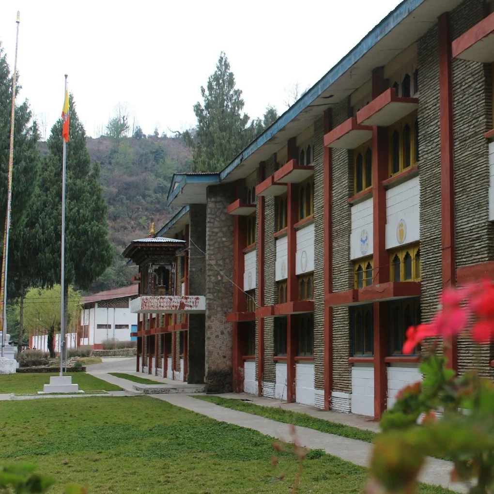
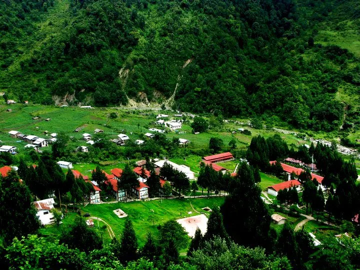

Education 🎓📚
- Samtse College of Education – B.Ed. ICT (Secondary) (Current)
Studying here has been an exciting journey. I enjoy learning about teaching methods, ICT tools, and educational technologies. The college has given me opportunities to practice teaching, work on projects, and explore my interests in coding and digital learning. I also love interacting with my classmates and learning from their experiences.
- Jigmesherubling Higher Secondary School – High School Graduate
High school was where I discovered my love for learning and curiosity for technology. I enjoyed working on assignments, collaborating with friends, and participating in small school activities. It also helped me build the discipline and focus that I carry with me today.
 